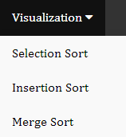

Sorting Algorithms

To show off a couple sorting algorithms that I've chosen, I made
visualizations for those algorithms. What these visualizations show
us is how each sorting algorithm interacts with the list provided.
Pick an algorithm from the navigation bar at the top to see how it
works. You can play around with the algorithms and change some
settings, however changing the settings can make it unbearably slow.
All of my code can be found in github.
Here are some instructions on how to use the visualization:
- Each visualization is ready to go as soon as you load the page.
All you need to do is click Start!
- Sorting an already sorted list isn't very interesting so if you
want to use a random list you can click Shuffle.
- The first Input Field tells the algorithm how many elements we
want to sort. By default it's set to 100 but you can change to any
positive number you'd like!
- The second Input Field tells us how long of a delay to put on
each comparison the algorithm makes. By default it is set to 1 but
you can set it to any positive value you'd like
- If the algorithm is taking a bit longer than you'd like to wait,
you can refresh the page and everything will reset.